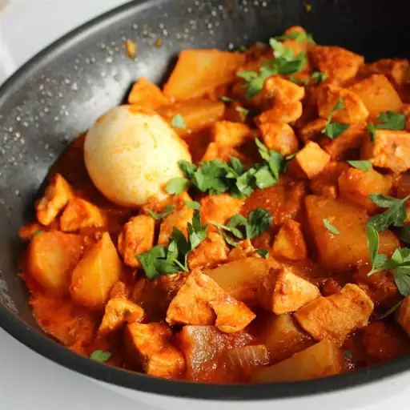

Doro Wet

What is Doro Wat?
Doro wat (also spelled doro wot) is an Ethiopian chicken stew flavored with a spiced butter called niter kibbeh and berbere,
a spice blend that often includes fenugreek, hot chiles, paprika, cardamom, and coriander. Toward the end of cooking, hard-boiled eggs
are added to the stew. Doro wat is typically served with injera bread, a flatbread made with teff, the staple grain of Ethiopia.
It's one of the most recognizable Ethiopian foods and is served in Ethiopian restaurants around the world.
Ingredients
- 1 cup butter, divided
- onion, chopped
- 2 ½ cups water, divided
- 1 (6 ounce) can tomato paste
- ¾ cup berbere seasoning
- 1 teaspoon chopped garlic
- ½ teaspoon ground ginger
- 4 skinless, boneless chicken breasts, cubed
- ⅓ cup sweet white wine
- ½ teaspoon ground cardamom
- ½ teaspoon freshly ground black pepper
- 4 hard-boiled eggs
Directions
Step 1
- Heat 1/2 cup butter in a skillet over medium-low heat.
- Cook and stir onion until translucent, 5 to 6 minutes.
- Add 1/2 cup water and tomato paste; stir until hot, about 2 minutes.
- Stir in remaining butter, berbere, garlic, and ginger.
- Adjust heat to low and cook until mixture thickens to paste consistency, 20 to 30 minutes.
Step 2
- Stir remaining water into berbere paste; add chicken.
- Simmer until thickened to sauce consistency, about 45 minutes.
Step 3
- Stir white wine, cardamom, and black pepper into the sauce; add hard-boiled eggs.
- Cook until sauce is reduced slightly, about 15 minutes more.